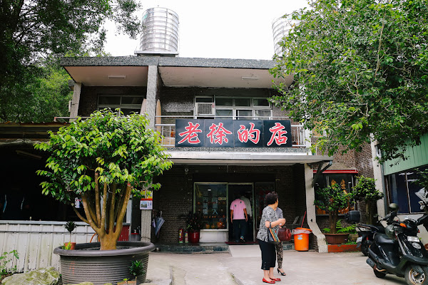
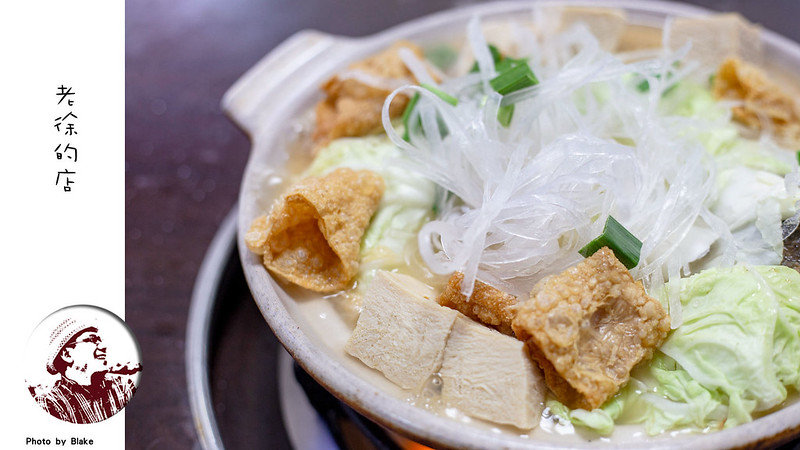

老徐的店
google評價：4.3★
店家資訊
地址：新北市新店區新烏路三段寶島巷9號
營業時間：早上11:00到晚上8:30
店家電話：02-2666-0570

推薦菜單
砂鍋魚頭650元/900元 虎皮豬手60元
酸排牛肉420元 石頭蝦320元/620元
松柏長青240元 金銀苦瓜280元 鐵板豆副260元
地瓜葉200元 半天花260元 珠蔥260元
山蘇280元 小香魚380元 炸肋排360元/620元
顧客評論
這家是部落客大推的涼麵，麵條Q彈且味道很香，上面除了一般的醬汁外還有蒜頭跟小黃瓜絲，不過如果是不喜歡麻醬醬汁的人可能要注意，因為店內的所有涼麵都是麻醬口味的沒有醬油口味。除此之外，以涼麵店來說，這家涼麵湯品種類還蠻多的，總共有十一種，提供非常多選擇。